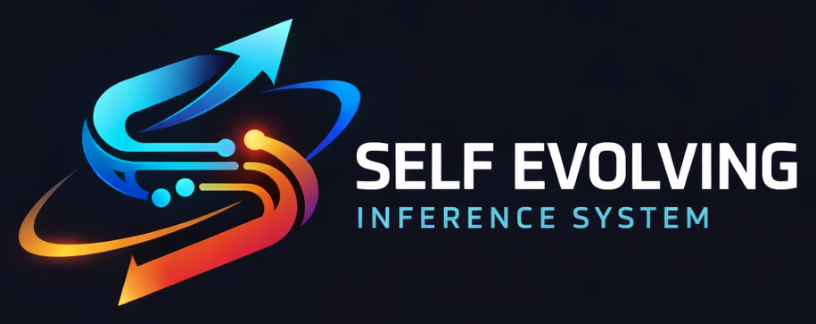
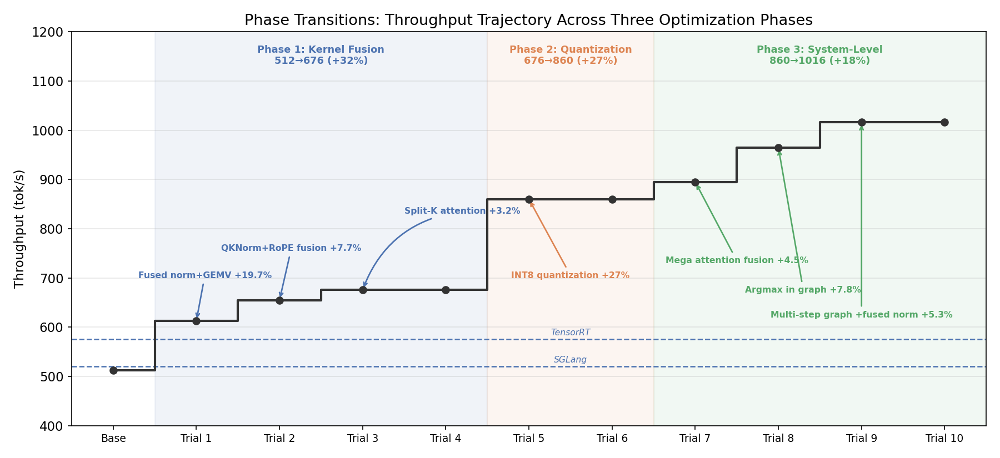

$100 of Claude doubles throughput
A minimal scaffold that lets an AI agent iteratively optimize an LLM inference engine. Over 10 trials, Claude evolved mini-sglang from 512 to 1,016 tok/s (+98%) on Qwen3-0.6B / RTX PRO 6000 Blackwell.
Results
Each trial reads the prior session's notes, profiles the system, and decides what to try next — without human guidance.

Decode throughput (tok/s) measured after each trial on Qwen3-0.6B / RTX PRO 6000 Blackwell.
View the evolved code on the trial-10 branch of our mini-sglang fork.
Blog Posts
Post 1 · The Process
The scaffold design, the emergent behaviors, and what 10 trials of autonomous optimization revealed about agentic iteration.
Read post →Post 2 · The Kernels
A deep dive into 3,700 lines of Triton and CUDA: the fused megakernels, the subtle bugs, and the surprises.
Read post →